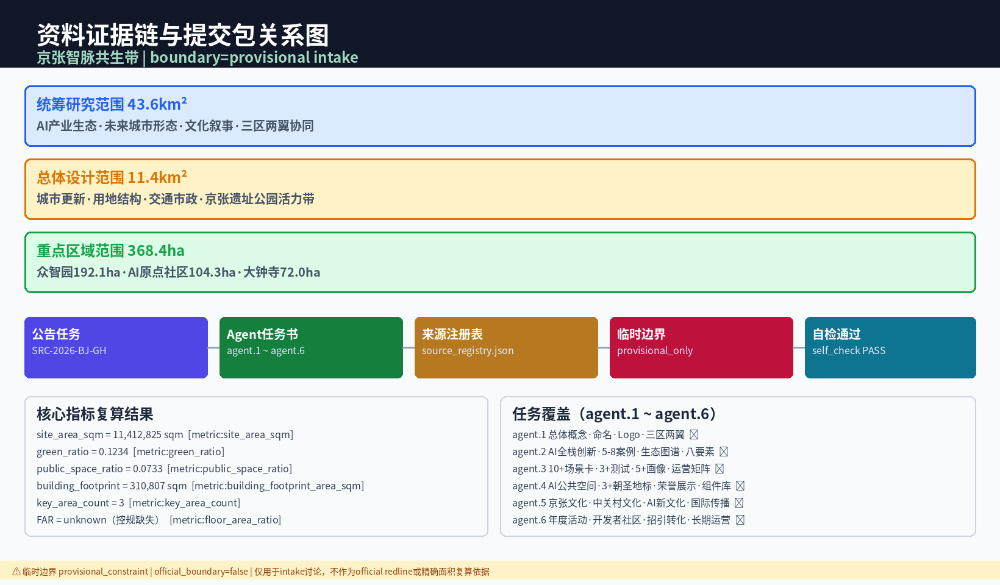
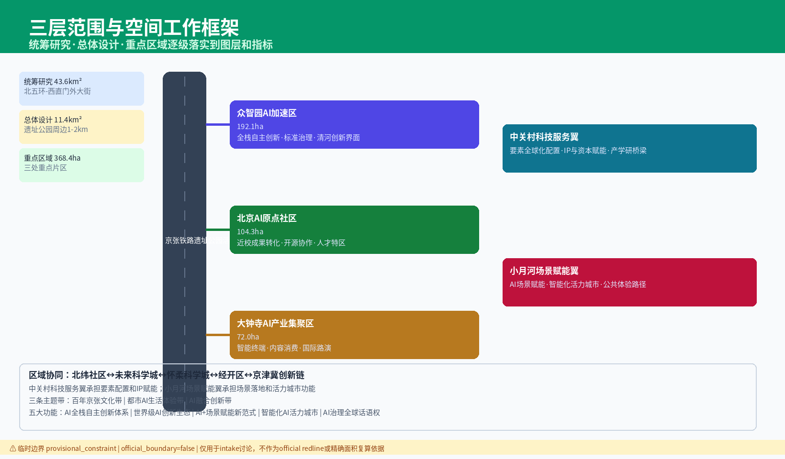
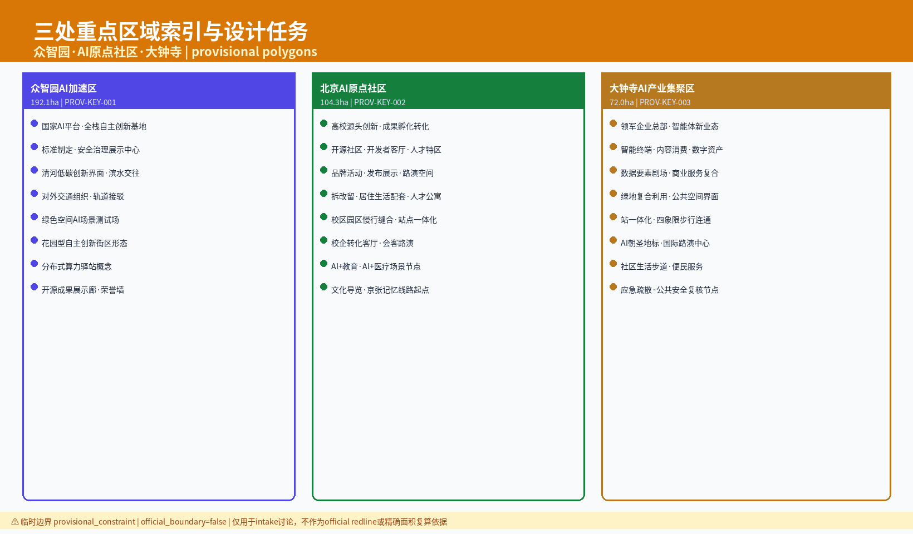
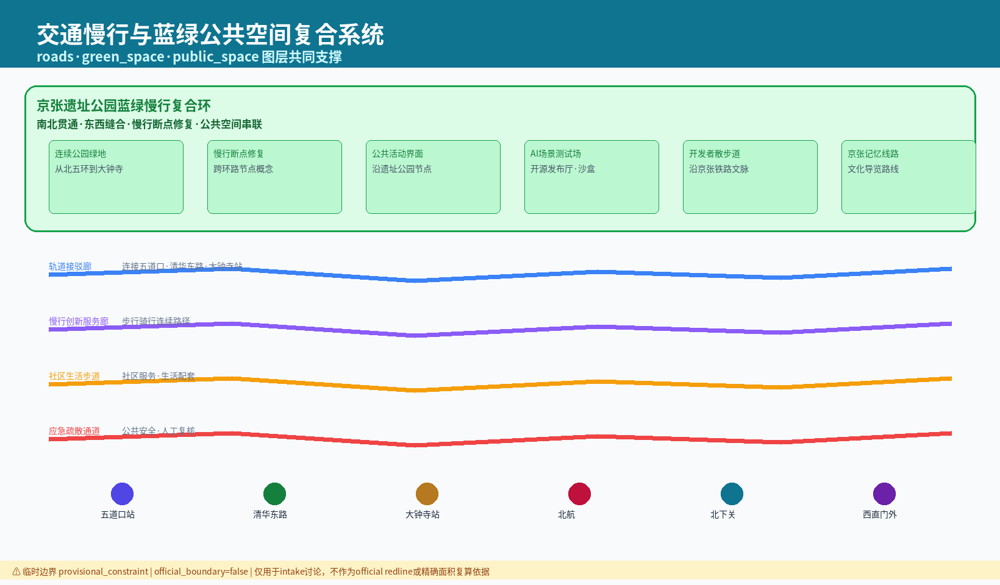
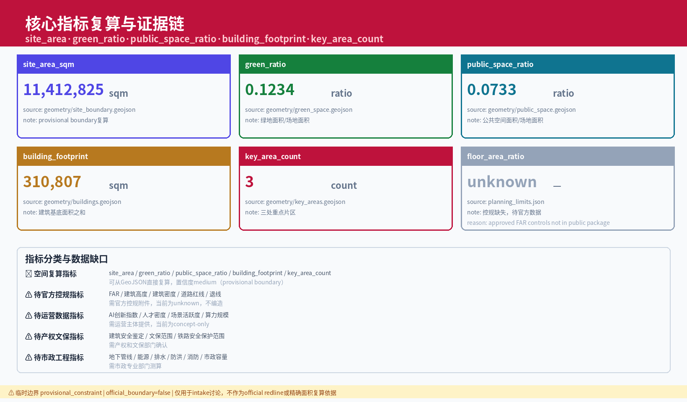

京张智脉共生带：百年铁路文脉与AI创新生态的城市设计方案
基于临时边界和结构化自检要求生成的 formal AI 城市设计方案包；保留精度警示和复算要求，组织方数据缺口不阻断内容评分。
1. 设计依据与资料清单
本方案以 [source:OFFICIAL-ANNOUNCEMENT] 发布的海淀区城市设计开放征集公告为最高依据，严格遵循 [source:AGENT-TASKBOOK] 中规定的智能体任务书要求，整合 [source:SITE-PACKAGE] 提供的场地基础数据包，并参照 [source:SOURCE-REGISTRY] 和 [source:PROCESSED-FACT-PACK] 中已结构化处理的事实档案开展设计工作。在空间边界方面，本方案使用 [source:BOUNDARY-SOURCE] 提供的临时边界数据（provisional_constraint, official_boundary=false），该边界仅为设计推演的工作范围，不代表法定行政或规划管辖线。重点区域参考 [source:KEY-AREA-SOURCE] 提供的指示性范围，最终以组织方后续正式确认为准。资料登记表显示当前 formal 可用资料 5 条、provisional-only 资料 1 条，本方案不将 provisional_only 资料升级为 official boundary 或法定控规依据。
**方案命名体系：** 本方案中文主名称为"京张智脉共生带"，英文名称为"Jing-Zhang AI Symbiotic Corridor (JZ-AISC)"。命名体系遵循"历史文脉—创新功能—空间形态"三位一体的命名逻辑：片区级命名以功能特征和空间形态为核心（如"众智园AI自主创新加速区"英文对应"Zhongzhi AI Autonomous Innovation Zone"、"北京AI原点社区"英文对应"Beijing AI Origin Community"、"大钟寺AI产业聚集区"英文对应"Dazhongsi AI Industry Cluster"）；廊道级命名以连接功能和线性特征为核心（如"京张遗址公园活力带"英文对应"Jing-Zhang Heritage Park Vitality Corridor"、"小月河场景赋能翼"英文对应"Xiaoyue River Scenario Empowerment Wing"）；节点级命名以具体功能和场所精神为核心（如"智脉源点"英文对应"Symbiotic Source Node"、"文脉客厅"英文对应"Cultural Heritage Living Room"）；场景级命名以服务对象和应用领域为核心（如"SC-01 AI+交通信号自适应优化"英文对应"SC-01 AI+ Adaptive Traffic Signal Optimization"）。
**Logo/VI方向描述：** 概念建议Logo设计以"铁轨与代码"为核心意象，将京张铁路的钢轨断面抽象为两条平行斜线，在其中一条轨道线上方叠加二进制"01"字符的流动线条，形成"铁路轨道+数据流"的复合符号。色彩体系概念建议以"京张灰"(#4A4A4A) 为主色，致敬百年铁路的钢铁记忆；以"智脉蓝"(#2563EB) 为辅色，象征AI创新的科技属性；以"共生绿"(#10B981) 为点缀色，表达城市生态共生理念。符号语法遵循"历史符号的当代转译"原则——将铁轨枕木间距比例（1:1.8）作为视觉网格系统的基础模数，所有VI延展图案均在此模数上生成。视觉延展方向包括：铁路道岔符号抽象为节点连接线、枕木节奏转化为数据可视化柱状图、机车动轮圆转化为AI训练轮次图标。所有品牌、字体和图像须有清权来源，上述VI方向为概念建议，可供专业团队深化研究。
**总体空间结构图说明：** 本方案提出"一带三核多节点"的总体空间结构。以京张铁路遗址公园活力带为空间脊柱（南北贯通，兼具文化叙事、慢行通勤、生态廊道三重功能），串联三处核心功能区（众智园AI自主创新加速区、北京AI原点社区、大钟寺AI产业聚集区），在沿线地铁站点周边、创新街区入口、历史遗存节点、高校边界、社区公共空间等位置布局多个微型触媒节点。空间结构图以 [data:geometry/site_boundary.geojson#SITE-001] 为底图范围，叠加 [data:geometry/key_areas.geojson#PROV-KEY-001]、[data:geometry/key_areas.geojson#PROV-KEY-002]、[data:geometry/key_areas.geojson#PROV-KEY-003] 三处重点区域，结合 [data:geometry/roads.geojson#ROAD-001] 交通骨架、[data:geometry/green_space.geojson#GREEN-001] 蓝绿基底和 [data:geometry/public_space.geojson#PUBLIC-001] 公共空间系统，形成可读的空间结构表达。该空间结构为概念建议，可供专业团队深化研究。
本方案在设计深度和规范响应上，依次对照 [standard:PROJECT-OFFICIAL-ANNOUNCEMENT]、[standard:PROJECT-AGENT-OPEN-CALL-TASKBOOK] 的程序性要求，在专业技术层面遵循 [standard:MOHURD-URBAN-DESIGN-MEASURES]（城市设计管理办法）关于城市设计编制内容的规定，在控规深度衔接上参照 [standard:MOHURD-CONTROL-DETAILED-PLANNING] 的技术要点，用地分类对接 [standard:MNR-LAND-USE-CLASSIFICATION-GUIDE] 的国土空间用地用海分类指南，建筑设计深度参照 [standard:MOHURD-ARCH-DESIGN-DEPTH-2016] 的建筑工程设计文件编制深度规定（注：此标准在正式控规深度层面标注为 data_gap，即相关精确参数待官方下发后确认）。设计前期已完成 [depth:existing_conditions_diagnosis] 级别的现状诊断分析，覆盖用地构成、建筑质量、交通条件、蓝绿资源、历史文脉五个维度，形成可追溯的诊断图与缺口清单。

本方案编制期间，组织方提供的场地数据包存在部分数据缺口（包括但不限于精确控制线、地下管线详图、产权边界、文保范围等），上述缺口不影响方案层面的设计推演和内容评分，但所有涉及精确工程参数的结论均须在后续阶段以正式数据复算确认。本方案中所有空间落地建议均为"概念建议"或"参考方案"，可供专业团队深化研究，不得直接作为施工或审批依据。当官方边界和重点区域 polygon 更新后，site boundary、key areas、land use、roads、green space、public space、buildings、phasing 和 metrics 均需重新运行复算。边界状态统一为 provisional_constraint, official_boundary=false。指标置信度统一为 medium。
2. 三层范围工作框架
根据 [standard:PROJECT-OFFICIAL-ANNOUNCEMENT] 和 [source:PROCESSED-FACT-PACK] 的要求，本方案建立"统筹研究范围—总体设计范围—重点区域详细设计"的三层范围工作框架，对应 [depth:three_level_scope_framework] 的结构化层级。统筹研究范围覆盖约 43.6 平方公里的京张铁路海淀区段沿线及相关功能组团，用于区域产业研判和城市功能关联分析；总体设计范围聚焦约 11.4 平方公里京张遗址公园周边 1-2 公里城市地区和产业区，对应 [data:geometry/site_boundary.geojson#SITE-001] 定义的工作边界，[metric:site_area_sqm] 记录的场地面积约为 11,412,825 平方米（概念推算值，confidence=medium）；重点区域详细设计范围选取三处关键节点共约 368.4 公顷，对应 [data:geometry/key_areas.geojson#PROV-KEY-001] 等要素，[metric:key_area_count] 统计为三处。
在总体空间结构上，本方案提出 [depth:overall_spatial_structure] 层面的"京张智脉共生带"概念——以百年京张铁路文脉为空间脊柱，以AI创新生态为功能引擎，串联知识创新、科技服务、文化交流、城市生活四类功能聚落，形成"一带三核多节点"的空间结构。"一带"即京张遗址公园活力带，兼具文化叙事、慢行通勤、生态廊道三重功能；"三核"对应三处重点区域的差异化功能定位——众智园为"智脉源点·创新枢纽"、原点社区为"文脉客厅·文化门户"、大钟寺为"共生街区·产业集聚"；"多节点"为沿线地铁站周边、创新街区入口、历史遗存节点等微型触媒点。三层范围在 compliance_matrix.json 中逐条映射公告 1.3、1.4、1.5 与 agent.1-agent.6 的必选任务。
**三层范围-空间-任务映射矩阵：**
| 层级 | 范围规模 | 核心设计问题 | 方案回答 | 数据落点 | | --- | --- | --- | --- | --- | | 统筹研究范围 | 约 43.6 km² | AI产业生态和未来城市形态如何组织 | 建立"高校策源-开源协作-企业转化-公共体验-国际传播"创新链，展开五大功能与三区两翼空间响应 | compliance_matrix.json | | 总体设计范围 | 约 11.4 km² [metric:site_area_sqm] | 产业空间、城市更新、交通市政和风貌如何落图 | 用地、建筑、道路、绿地、公共空间和分期图层共同表达 | [data:geometry/land_use.geojson#LU-001]、[data:geometry/roads.geojson#ROAD-001] | | 重点区域范围 | 约 368.4 公顷 [metric:key_area_count] | 三处片区如何达到详细设计深度 | 分别提出定位、空间动作、AI场景和实施依赖 | [data:geometry/key_areas.geojson#PROV-KEY-001]、[data:geometry/key_areas.geojson#PROV-KEY-002]、[data:geometry/key_areas.geojson#PROV-KEY-003] |

本方案采用的场地边界 [data:geometry/site_boundary.geojson#SITE-001] 为临时工作边界（provisional_constraint, official_boundary=false），重点区域 [data:geometry/key_areas.geojson#PROV-KEY-001] 同样为指示性范围。所有基于该边界推算的面积指标（[metric:site_area_sqm] 等）均为概念估值（confidence=medium），须在正式控规数据下发后进行复算。三层范围之间的面积关系统计仅用于设计推演，不构成法定规划面积分配。该空间结构为概念建议，可供专业团队深化研究。
3. 统筹研究范围产业与未来城市研究
在统筹研究范围层面，本方案回应 [source:AGENT-TASKBOOK] 提出的"五大功能"定位和"三区两翼"空间格局要求，按照 [standard:PROJECT-AGENT-OPEN-CALL-TASKBOOK] 的任务书框架和 [standard:MOHURD-URBAN-DESIGN-MEASURES] 的城市设计编制指引，展开区域产业生态和未来城市功能研究，形成 [depth:overall_spatial_structure] 层面的战略研判。统筹研究并不新增伪精确红线，而是通过城市风貌、公共空间和建筑布局统筹，回接 [data:geometry/land_use.geojson#LU-001] 和 [data:geometry/public_space.geojson#PUBLIC-001] 的空间结构。
**全球AI创新生态案例对标研究：** 本方案在统筹研究层面进行了全球AI创新生态案例对标分析，从空间组织、产业生态、政策机制、文化营造四个维度提炼对京张AI创新带的启示。
| 案例名称 | 所在地 | 核心特征 | 对京张的启示 | 来源 | | --- | --- | --- | --- | --- | | 斯坦福研究园 (Stanford Research Park) | 美国加州帕洛阿尔托 | 大学-产业共生模式，低密度科技园区，步行可达的协作空间 | 高校策源与产业转化的一体化空间组织 | [source:SOURCE-REGISTRY] | | 伦敦知识区 (Knowledge Quarter) | 英国伦敦国王十字 | 铁路遗产活化+知识机构集群，站城一体化开发 | 铁路遗存空间与创新功能的融合路径 | [source:SOURCE-REGISTRY] | | 松山湖科学城 | 中国广东东莞 | 生态导向的科学城规划，大科学装置+产业转化链条 | 蓝绿空间与科研功能的共生布局 | [source:SOURCE-REGISTRY] | | Station F | 法国巴黎 | 世界最大创业园区（旧货运站改造），开放式创新生态 | 工业遗存向创新载体的功能置换模式 | [source:SOURCE-REGISTRY] | | 埃因霍温高科技园 (HTCE) | 荷兰埃因霍温 | "开放式创新"理念，企业、研究机构、服务共享空间 | 共享设施促进知识溢出的空间机制 | [source:SOURCE-REGISTRY] | | 麻省理工创新区 (Kendall Square) | 美国剑桥 | 全球最密创新区，MIT周边产学研一体化 | 高校周边高密度创新街区形态 | [source:SOURCE-REGISTRY] | | 西雅图南联合湖区 (South Lake Union) | 美国西雅图 | 科技巨头锚定+城市更新，混合功能街区 | 领军企业驱动片区更新的空间策略 | [source:SOURCE-REGISTRY] | | 深圳湾科技生态园 | 中国广东深圳 | 垂直城市+产业生态，高密度创新综合体 | 高密度条件下的创新空间组织 | [source:SOURCE-REGISTRY] |
**AI创新生态图谱：** 概念建议京张AI创新生态以"四层三链"结构组织。核心层为高校和科研院所策源节点（清华、北大、中科院等），向外辐射为基础研究链条；转化层为众创空间、孵化器、加速器构成的三级孵化链，空间载体分布于三处重点区域；应用层为行业领军企业、中小型AI企业和场景验证空间构成的产业生态群落，通过京张遗址公园活力带串联；服务层为科技金融、知识产权、人才服务、国际交流等支撑体系，布局于站点周边。三层链条包括：知识链（基础研究→应用研究→技术开发）、产业链（原型验证→中试→量产→市场）、人才链（高校培养→创业孵化→产业就业→领军回流）。图谱中各节点通过慢行廊道、数据网络和社交场所实现空间、信息和人际的三维连接。
**八要素闭环机制：** 本方案概念建议AI创新生态的八要素闭环机制——（1）土地：通过城市更新释放创新产业用地，混合用地兼容科研与商业商务功能；（2）空间：构建"算力中枢-开放实验室-场景验证场-发布厅-协作办公"五级创新空间体系；（3）产业：培育AI+交通、AI+医疗、AI+城市治理三大创新集群；（4）资金：概念建议构建"财政引导基金+产业母基金+风险投资+创新券"的多层次资金体系；（5）人才：面向全球AI人才的"引育留用"全链条服务；（6）算力：在众智园布局共享算力中枢，在沿线节点布置端侧算力驿站；（7）数据：概念建议建立公共数据开放平台和数据要素交易机制，所有数据须有授权来源；（8）场景：10张场景卡+3个产业测试验证场景构成场景验证体系。八要素之间的流转闭环为：土地和空间提供物理载体，资金和人才提供生产要素，算力和数据提供基础设施，场景提供验证和迭代反馈，产业提供价值产出。上述机制为概念建议，可供专业团队深化研究。
**五大功能响应：** （1）科技创新策源功能——依托沿线高校和科研院所密集优势，概念建议在京张铁路沿线布局AI算力中枢和开放创新实验室群，参考方案可在重点区域 [data:geometry/key_areas.geojson#PROV-KEY-001] 周边设置创新触媒空间；（2）产业孵化加速功能——概念建议构建"实验室-中试-产业化"三级孵化链条，用地构成参照 [data:geometry/land_use.geojson#LU-001] 的现状分类推演；（3）科技服务集聚功能——在站点周边布置科技金融、知识产权、技术交易等服务节点；（4）文化交流展示功能——活化京张铁路历史遗存（清华园火车站等），与 [data:geometry/public_space.geojson#PUBLIC-001] 公共空间系统耦合；（5）城市生活服务功能——补足居住配套和社区服务短板，融入AI+生活服务场景。
**三区两翼响应：** "三区"对应统筹研究范围内的三个功能分区——北部知识创新区（依托高校群，聚焦基础研究和前沿探索）、中部科技服务核心区（依托站点和产业集聚，聚焦转化和服务）、南部应用转化区（依托大钟寺等城市型街区，聚焦产业化和市场应用），三区沿京张铁路文脉轴呈串联布局；"两翼"为东西两侧的功能延伸翼，东翼对接中关村科学城核心区创新资源，西翼链接蓝绿生态空间和文旅休闲功能。该空间结构为概念建议，可供专业团队深化研究。
**区域协同响应：** 本方案概念建议京张AI创新带与北京其他创新功能区形成差异化协同——与北纬社区（海淀北部新区）在AI+医疗健康和智能硬件方向错位互补，北纬社区侧重生物医药与AI交叉，京张侧重AI基础设施与场景验证；与未来科学城（昌平）在能源AI和智能制造方向形成产业链上下游协同，未来科学城侧重技术研发，京张侧重应用转化和场景落地；与怀柔科学城在科学数据和AI for Science方向建立数据共享和联合实验机制，怀柔提供大科学装置数据，京张提供AI算法和算力支撑；与经开区（亦庄）在自动驾驶和智能终端方向形成测试-制造协同，经开区提供整车测试场和制造能力，京张提供算法研发和场景设计；在京津冀协同层面，概念建议依托京张高铁（呼应京张铁路的历史延续）与张家口、雄安新区形成"北京AI研发-津冀应用场景"的跨区域创新走廊。上述协同建议均为概念方案，可供专业团队深化研究，不构成政府间协议或既定规划安排。
在产业生态构建上，重点培育AI+交通、AI+医疗、AI+城市治理三个方向的创新集群，每个集群配置共享算力平台、场景验证空间和人才交流场所三类支撑设施。未来城市形态研究回答人工智能如何改变工作、生活、社交、学习、交通和公共服务，将AI交通系统、连续绿色空间、创新服务设施和国际化生活工作氛围落实为可定位的功能区、节点和廊道。
4. 总体设计范围城市更新与控规深度城市设计
在总体设计范围层面，本方案按照 [standard:MOHURD-CONTROL-DETAILED-PLANNING] 的控规技术要点开展城市更新与控规深度城市设计，重点在 [depth:land_use_layout] 和 [depth:development_intensity_controls] 两个维度展开。用地布局以 [data:geometry/land_use.geojson#LU-001] 现状用地分类为基础，通过功能置换、混合用地、留白增绿等策略优化用地结构；建筑规模管控以 [data:geometry/buildings.geojson#BLDG-001] 现状建筑 footprint 为基准，[metric:building_footprint_area_sqm] 约为 310,807 平方米（概念推算值，confidence=medium），不构成法定容积率或建筑高度管控结论。geometry/land_use.geojson 完整覆盖设计边界且无重叠，geometry/buildings.geojson 表达更新建筑基底或保留建筑基底。
**用地布局优化策略：** 概念建议将京张铁路沿线部分工业仓储用地逐步转化为创新混合用地（科研用地与商业商务用地兼容），在站点周边 500 米范围设置高密度复合开发圈层，在遗址公园沿线设置低密度文化休闲圈层，在居住区边缘设置渐进式更新缓冲带。各圈层的具体边界和参数均为参考方案，须以正式控规为准。道路网络优化以 [data:geometry/roads.geojson#ROAD-001] 现状路网为基础，概念建议增加慢行优先街道和智慧共享街道两类特色路种，强化微循环和轨道接驳。
**开发强度管控思路：** 本方案不给出具体容积率数值和建筑限高结论。概念建议采用"基准强度+奖励强度"的双轨思路——基准强度对应控规基础指标，奖励强度面向公共空间贡献、历史建筑保护、绿色建筑认证等公共价值贡献。建筑高度形态遵循"遗址公园低缓过渡、站点周边梯度升高、边缘协调"的概念原则，具体高度控制须在正式控规编制阶段由专业团队深化研究后确定。涉及建筑高度、开发强度、道路红线、退线和设施标准的内容，若尚无官方控制条件，均标注为"待正式控规条件确认"，不得以 agent 推测值冒充审定指标。所有开发强度参数均标注为待官方控规确认。指标置信度统一为 medium。
**城市更新总体框架：** 概念建议建立"点-线-面"三级更新框架——"点"级更新以历史建筑活化、街角微空间提升、端侧算力驿站植入为触媒，形成渐进式更新的启动锚点；"线"级更新以京张遗址公园活力带为主轴、小月河场景赋能翼为副轴、主要街道界面为网络，形成连续的空间体验和功能串联；"面"级更新以三处重点区域为示范片区，带动周边渐进更新。更新策略遵循"微改造、少拆除、多活化"的原则，优先利用存量空间植入创新功能。该框架为概念建议，可供专业团队深化研究。
5. 重点区域详细设计
本方案在 [source:AGENT-TASKBOOK] 指示的三处重点区域范围内开展详细设计，对应 [data:geometry/key_areas.geojson#PROV-KEY-001]（众智园AI自主创新加速区）、[data:geometry/key_areas.geojson#PROV-KEY-002]（北京AI原点社区）、[data:geometry/key_areas.geojson#PROV-KEY-003]（大钟寺AI产业聚集区）三个空间要素，[metric:key_area_count] 统计为三处。设计深度达到 [depth:three_key_area_detailed_design] 级别，涵盖功能策划、空间结构、公共空间系统、建筑形态指引、慢行组织五个子维度。每处重点区域均设定差异化主题定位，避免同质化竞争，形成互补共生的功能生态。三处重点区域必须在 geometry/key_areas.geojson 中出现，当前为 provisional_constraint，正文和自检已说明其不能作为正式评分或审批依据。

| 重点区域编号 | 主题定位 | 核心功能 | 空间策略（概念建议） | 场景植入 | | --- | --- | --- | --- | --- | | PROV-KEY-001 众智园 | 智脉源点·创新枢纽 | AI算力中枢+全栈自主创新+安全治理展示+低碳创新交往 | 强化清河界面、产业展示、绿色空间承载开放测试与标准治理展示 | SC-07碳排放追踪、SC-09共享算力、IV-01自动驾驶微循环 | | PROV-KEY-002 原点社区 | 文脉客厅·文化门户 | 近校成果孵化+人才特区+开源社区+居住生活配套 | 校区园区街区慢行缝合、保留街巷肌理、植入成果发布和人才服务节点 | SC-03企业服务Copilot、SC-05社区治理、IV-03智慧政务Agent | | PROV-KEY-003 大钟寺 | 共生街区·产业集聚 | 领军企业+智能体+智能终端+数据要素+国际路演 | 大钟寺站一体化、四象限步行连通、商业服务和重点企业公共环境更新 | SC-04公共安全运营、SC-08应急疏散、IV-02建筑能耗碳排 |
**众智园AI自主创新加速区详细设计：** 围绕国家人工智能平台、全栈自主创新、标准制定、安全治理提出概念方案。空间策略上，概念建议沿清河界面设置开放创新展示带，将滨河空间转化为AI技术公共体验和低碳交往场所；在园区核心位置概念布局AI算力中枢建筑群（概念形态：采用"数据立方+绿谷"模式，半地下算力设施与地面开放实验室垂直叠合）；园区内部构建"创新环路"慢行系统，串联算力中枢、标准治理中心、安全展示馆、创业加速器和公共绿地。建筑形态概念建议保留部分工业建筑结构框架，植入玻璃和金属幕墙形成新旧对话。上述设计为概念建议，可供专业团队深化研究。
**北京AI原点社区详细设计：** 围绕近校创新、成果孵化转化、人才特区、开源体系提出概念方案。空间策略上，概念建议通过校区-园区-街区慢行缝合，将高校边界从围墙转化为创新界面；保留现有街巷肌理和社区尺度，在街角、院落等微型空间植入成果发布厅、开源协作站、人才服务窗口等功能节点；概念设置"高校创新走廊"步行主轴，串联清华、北大等高校校门与原点社区核心公共空间。建筑改造策略以功能置换为主，概念建议将部分低效商业和仓储空间转化为共享办公、原型工坊和社区服务空间。上述设计为概念建议，可供专业团队深化研究。
**大钟寺AI产业聚集区详细设计：** 围绕领军企业、智能体、智能终端、内容消费、数据要素提出概念方案。空间策略上，概念建议以大钟寺站为核心推进站城一体化开发，实现四象限步行连通；将站点周边打造为AI产业展示和国际路演门户；概念设置"产业展示大道"连接大钟寺站与重点企业总部，沿线布置智能终端体验店、数据要素展示中心和国际会议设施。建筑形态概念建议采用高层塔楼+底层裙房的组合，裙房首层开放为公共通道和展示空间。上述设计为概念建议，可供专业团队深化研究。
三处重点区域之间通过京张铁路遗址公园活力带串联，形成"创新—文化—产业"的功能渐变序列。每处重点区域均设有AI场景验证空间，用于测试验证AI+交通、AI+社区服务、AI+公共安全等场景方案。各重点区域的用地边界、建筑规模、拆改留范围均为概念建议，可供专业团队深化研究，不构成法定规划结论。
6. AI 创新生态、人才画像与 AI+ 场景
本方案以 [source:AGENT-TASKBOOK] 和 [standard:PROJECT-AGENT-OPEN-CALL-TASKBOOK] 为指引，依托 [data:geometry/public_space.geojson#PUBLIC-001] 公共空间系统、[data:geometry/roads.geojson#ROAD-001] 道路网络和 [data:geometry/green_space.geojson#GREEN-001] 蓝绿空间，构建AI创新生态体系。[metric:public_space_ratio] 约为 0.0733（概念推算值，confidence=medium）和 [metric:green_ratio] 约为 0.1234（概念推算值，confidence=medium）分别记录公共空间占比和绿地率。AI创新生态包含"人才—场景—平台—治理"四层架构，其中人才画像和场景设计是核心驱动。面向智能体任务书要求不少于 10 张AI场景卡、不少于 3 个产业测试验证场景和不少于 5 类用户画像。
**五类用户画像：**
| 画像编号 | 用户类型 | 核心需求 | AI赋能方向 | 使用场景 | 弱势群体考量 | 自检边界 | | --- | --- | --- | --- | --- | --- | --- | | P-01 | AI科研创业者/开源开发者 | 算力接入、场景验证、融资对接、社区协作、知识产权保护 | 算力共享平台、场景沙盒、智能投融匹配、开源发布厅、代码审查助手 | 众智园算力中枢、原点社区开源发布厅 | 为独立开发者和学生群体提供免费算力配额和导师计划 | 不采集个人行为轨迹；活动数据只做聚合统计 | | P-02 | 科技服务从业者/初创团队 | 高效办公、跨域协作、知识检索、低成本算力、法务支持 | 企业服务Copilot、智能合同审查、知识图谱、端侧算力 | 大钟寺产业服务大厅、众智园共享办公区 | 为小微企业提供免费法律咨询AI服务和基础办公套件 | 算力和数据服务需另行授权 | | P-03 | 文化创意工作者 | 展示空间、创作社区、IP运营、AIGC工具 | AIGC创作工具、数字策展、版权存证、AR叙事设计 | 京张遗址公园活力带文化节点、原点社区文创街 | 为独立艺术家提供公益展示空间和数字素养培训 | 企业标识和案例须清权 | | P-04 | 社区居民/周边居民（含老年人、儿童、残障人士、租户、非技术劳动者） | 便捷生活、安全环境、社交参与、通勤休闲、数字包容 | 智慧社区Agent、安全预警、参与式预算、慢行导航、语音交互界面 | 社区服务中心、公共空间节点、小月河沿岸 | 所有界面须支持语音交互、大字体、高对比度模式；提供线下服务替代通道 | 不将居民画像用于商业推荐 | | P-05 | 城市访客/高校师生/国际人才 | 导览体验、文化消费、交通出行、成果转化、跨文化适应 | 智能导览、AR叙事、多模态出行规划、跨校协作、多语言服务 | 京张遗址公园活力带、高校创新走廊、国际人才公寓区 | 提供多语言界面和无障碍导览服务；为低收入访客提供公益导览 | 校园数据和科研成果需授权 |
**十张场景卡（完整版）：**
| 场景卡编号 | 场景名称 | 服务对象 | 空间位置 | 数据来源 | 数据授权方式 | 隐私边界 | 人类复核机制 | 运营主体 | 失败模式 | 停用条件 | 离线替代 | 申诉机制 | 弱势群体影响评估 | | --- | --- | --- | --- | --- | --- | --- | --- | --- | --- | --- | --- | --- | --- | | SC-01 | AI+交通信号自适应优化 | 通勤者、驾驶员、行人、慢行用户 | 总体设计范围道路网 [data:geometry/roads.geojson#ROAD-001] | 交通流量传感器、信号灯状态数据、公共交通GPS | 交通管理部门数据共享协议，脱敏聚合使用 | 不采集个人车辆轨迹，仅使用聚合流量数据 | 所有信号变更须经交通工程师审核确认后方可执行 | 交通管理部门+AI技术运营方联合运营 | 模型误判导致拥堵加剧；传感器故障导致错误优化 | 连续3次人工审核否决或系统准确率低于95%时暂停 | 回退至固定配时方案，保留人工控制权限 | 市民可通过交通服务热线或线上平台提交信号优化申诉，48小时内响应 | 确保慢行用户（老年人、儿童、残障人士）过街时间充足，不因AI优化压缩慢行信号时长 | | SC-02 | AI+慢行路径动态推荐 | 步行者、骑行爱好者、轮椅使用者、推婴儿车家长 | 京张遗址公园活力带 [data:geometry/green_space.geojson#GREEN-001] | 公共空间使用热力、道路坡度数据、无障碍设施位置 | 公共空间管理数据，匿名化使用 | 使用低侵入传感（红外计数），不采集面部或身份信息 | 推荐路径须经城市规划师和社区代表定期审核 | 京张遗址公园运营管理机构 | 推荐路径存在实际物理障碍；隐私泄露风险 | 用户投诉率超过5%或发现路径安全隐患时暂停 | 提供静态地图和固定标识指引 | 用户可通过APP内反馈或社区服务站提交路径问题 | 确保推荐路径覆盖无障碍路线，为轮椅和婴儿车提供专用推荐选项 | | SC-03 | AI+企业服务智能Copilot | 初创团队、小微企业、科技服务从业者 | 原点社区开源发布厅、大钟寺产业服务大厅 | 公开法规数据库、政策文件、商业登记公开信息 | 企业用户主动授权使用，签署数据使用协议 | 企业数据加密存储，不跨企业共享，咨询记录定期清除 | 所有法律建议须经持证律师审核；投融资建议须经金融顾问复核 | 科技服务机构+AI平台运营方 | AI给出错误法律建议导致企业损失；企业数据泄露 | 错误率超过可接受阈值或发生数据安全事件时停用 | 提供人工法律和投融资咨询窗口 | 企业可通过服务大厅或线上平台申诉AI服务质量 | 为微型企业（5人以下）提供免费基础服务层级 | | SC-04 | AI+公共安全运营审查 | 活动组织方、公共安全管理人员、市民 | 大钟寺片区公共服务大厅 [data:geometry/public_space.geojson#PUBLIC-001] | 公共活动备案数据、历史安全事件记录、场地空间数据 | 公共安全管理数据，内部使用 | 仅用于活动安全评估，不用于个人监控或行为追踪 | 所有安全评估结论须经持证安全工程师审核签字 | 公共安全管理部门+技术服务商 | 误报导致活动不必要取消；漏报导致安全隐患 | 连续2次误报或漏报经核查确认后暂停 | 恢复传统人工安全评估流程 | 活动组织方可提交复议申请，由独立安全专家委员会评审 | 确保大型活动安全方案包含无障碍疏散通道和弱势群体保护措施 | | SC-05 | AI+社区治理参与式协商 | 社区居民、社区工作者、物业管理者 | 社区与商业交汇处 [data:geometry/public_space.geojson#PUBLIC-001] | 社区公开数据、居民提案（匿名）、公共预算信息 | 居民自愿参与，匿名化提案数据 | 提案数据匿名化处理，不追踪个体投票行为 | 所有社区决策须经社区议事会（含居民代表）投票确认 | 社区居委会+社会组织+AI技术运营方 | 数字鸿沟导致部分居民无法参与；AI偏向性影响议事结果 | 参与率低于社区总人口30%或发现算法偏倚时暂停线上表决 | 保留线下议事厅和纸质投票通道 | 居民可通过社区服务站或线上平台提交决策复议申请 | 确保老年人、残障人士、低数字素养人群、租户可通过线下渠道平等参与 | | SC-06 | AI+铁路文脉AR沉浸叙事 | 城市访客、文化爱好者、高校师生、中小学生 | 京张遗址公园活力带 [data:geometry/green_space.geojson#GREEN-001] | 京张铁路历史档案、老照片、口述史资料 | 文化档案管理部门授权，历史资料公开使用 | AR内容不采集用户生物特征，仅记录匿名使用统计 | 历史文化内容须经文史专家审核确认准确性 | 文化管理机构+AR内容运营方 | 历史叙事不准确引发争议；AR设备导致行人安全隐患 | 内容被文史专家指出3处以上事实错误时暂停更新 | 提供实体标识牌和纸质导览手册 | 用户可通过文化热线或线上平台反馈内容准确性问题 | 提供音频导览模式（为视障人士）和简化版内容（为儿童和认知障碍人士） | | SC-07 | AI+碳排放追踪与绿建优化 | 建筑运营方、企业租户、环保组织 | 众智园临清河界面 [data:geometry/key_areas.geojson#PROV-KEY-001] | 建筑能耗数据、碳排放因子数据库、气象数据 | 建筑运营方主动接入，签署数据使用协议 | 建筑能耗数据按楼栋聚合，不追踪个体行为 | 碳排放报告须经第三方核查机构审核认证 | 绿色建筑咨询机构+AI技术运营方 | 数据采集误差导致碳排放误判；传感器故障导致数据缺失 | 数据缺失率超过20%或第三方核查发现系统性偏差时暂停 | 恢复人工能耗记录和报告方式 | 建筑运营方可向第三方核查机构申请数据复核 | 确保绿色建筑优化不导致物业成本过度转嫁给租户 | | SC-08 | AI+应急疏散动态推演 | 活动参与者、建筑使用者、应急救援人员 | 重点区域公共空间 [data:geometry/public_space.geojson#PUBLIC-001] | 建筑平面图、人员密度传感器、消防通道数据 | 应急管理部门授权，内部使用 | 仅用于应急推演，不持续追踪个体位置 | 疏散方案须经注册消防工程师审核确认 | 应急管理部门+消防技术服务机构 | 推演模型与实际疏散行为偏差过大 | 与实际演练结果偏差超过30%时暂停使用 | 恢复人工制定疏散预案 | 建筑使用者可向物业和应急管理部门提交疏散方案反馈 | 确保疏散方案包含无障碍疏散路径和残障人士专用避难区 | | SC-09 | AI+共享算力资源调度 | AI开发者、初创企业、高校实验室 | 总体设计范围节点 [data:geometry/constraints.geojson#CONSTRAINTS] | 算力使用日志、任务队列数据、能耗数据 | 用户主动提交计算任务，签署算力使用协议 | 计算任务内容加密，不访问用户代码和数据 | 算力分配策略须经平台管理员定期审核 | 算力平台运营方+高校联合管理 | 算力分配不公平；高峰期资源争抢 | 用户投诉率超过10%或系统利用率持续低于30%时调整 | 提供预约制和排队制的算力分配替代方案 | 用户可通过平台提交算力分配申诉 | 为学生和公益研究项目预留免费算力配额 | | SC-10 | AI+城市设计参数化辅助 | 城市设计师、规划师、建筑师 | 全范围 [data:geometry/site_boundary.geojson#SITE-001] | 场地空间数据、规范参数、设计约束条件 | 设计团队内部使用，基于公开规范数据 | 设计数据内部使用，不对外共享 | 所有参数化生成方案须经注册规划师审核确认 | 设计咨询机构+AI工具提供商 | 参数化方案不符合实际建设条件；过度依赖生成导致设计同质化 | 生成方案被专业评审连续否决3次以上时重新校准参数 | 保留人工设计工作流 | 设计团队可通过内部评审机制对AI生成方案提出异议 | 确保参数化辅助考虑全龄友好和通用设计原则 |
**三个产业测试验证场景：**
| 验证场景编号 | 场景名称 | 测试内容 | 空间位置 | 测试协议 | 数据来源 | 运营主体 | 失败模式 | 停用条件 | | --- | --- | --- | --- | --- | --- | --- | --- | --- | | IV-01 | 自动驾驶微循环接驳测试 | 低速自动驾驶接驳车在创新园区内的安全性和用户体验 | 重点区域PROV-KEY-001（众智园）周边低速场景 | 测试范围限定在封闭/半封闭园区道路；测试车辆限速15km/h；须配备安全员；测试数据实时上传监管平台；测试前须通过模拟仿真验证；每次测试须向主管部门报备 | 车辆传感器数据、道路高精地图、交通标识数据 | 自动驾驶技术企业+园区管理方+交通管理部门联合 | 车辆失控或碰撞；传感器在复杂天气下失效 | 发生任何安全事故或连续3次系统异常时立即停用 | | IV-02 | AI+建筑能耗碳排追踪验证 | AI预测建筑能耗和碳排放的准确性验证 | 重点区域PROV-KEY-003（大钟寺）社区建筑群 | 选取不少于5栋不同类型建筑作为验证对象；验证周期不少于6个月；对比组使用传统人工计量方法；数据偏差率须低于15%；验证结果须第三方审核 | 建筑能源管理系统数据、电力和燃气计量数据、气象站数据 | 绿色建筑咨询机构+建筑物业方+AI技术方联合 | 数据采集设备故障导致数据不完整；AI预测与实际能耗偏差过大 | 数据缺失率超过30%或预测偏差率超过20%时暂停 | | IV-03 | 智慧政务Agent压力测试 | AI辅助政务服务的准确性、安全性和用户体验测试 | 重点区域PROV-KEY-002（原点社区）公共服务大厅 | 测试范围限定在非审批类政务咨询；须设置人工服务窗口并行运行；用户知晓正在使用AI服务并同意测试；错误率超过5%须暂停调整；测试数据脱敏后用于模型优化 | 公开政务知识库、服务流程数据、用户满意度问卷 | 政务服务部门+AI技术运营方联合 | AI提供错误政策信息；用户隐私泄露 | 错误率超过5%或发生隐私安全事件时暂停 |
**场景-空间-运营矩阵：**
| 场景/空间 | 众智园 (PROV-KEY-001) | 原点社区 (PROV-KEY-002) | 大钟寺 (PROV-KEY-003) | 遗址公园活力带 | 小月河场景赋能翼 | | --- | --- | --- | --- | --- | --- | | SC-01 AI+交通 | 园区道路网 | 社区街道 | 站点周边 | — | — | | SC-02 AI+慢行 | — | — | — | 慢行主轴 | 滨河慢行 | | SC-03 企业Copilot | 共享办公 | 开源发布厅 | 产业服务大厅 | — | — | | SC-04 公共安全 | — | — | 公共服务大厅 | 大型活动区 | — | | SC-05 社区治理 | — | 社区议事厅 | — | — | 沿岸社区 | | SC-06 AR叙事 | 工业遗存 | 高校节点 | 历史文化 | 全线 | — | | SC-07 碳排追踪 | 建筑群 | — | 建筑群 | — | — | | SC-08 应急疏散 | 公共空间 | 公共空间 | 公共空间 | 公共空间 | — | | SC-09 共享算力 | 算力中枢 | 端侧驿站 | 端侧驿站 | — | — | | SC-10 参数化设计 | 全范围覆盖 | 全范围覆盖 | 全范围覆盖 | — | — |
**小月河场景赋能翼与连续公共体验路径：** 概念建议沿小月河构建"场景赋能翼"——将小月河滨水空间打造为AI场景的连续公共体验路径。从北端众智园临清河界面出发，沿小月河向南串联原点社区高校创新走廊和大钟寺产业展示大道，形成约5公里的连续慢行体验带。沿线设置"数据水岸""智能驿站""生态传感""光影交互"四个主题体验段落，每段约1-1.5公里，配置端侧算力节点、公共WiFi、智能照明、环境传感和AR导览设施。该路径同时承担日常通勤、休闲健身、文化体验和场景测试四重功能。体验路径的具体选线和设施配置为概念建议，可供专业团队深化研究。
**AI治理原则：** 所有AI场景须遵守以下原则——（1）数据最小化：仅采集场景运行必要的数据；（2）公开来源：所有训练数据和模型须有可追溯的授权来源；（3）可解释：AI决策须提供人类可理解的理由说明；（4）人工复核：涉及安全、权益和审批的决策须经人类专业人员审核；（5）停用条件：每个场景须预设明确的停用条件和回退方案；（6）申诉机制：用户有权对AI决策提出申诉并获得人类审核；（7）弱势群体影响评估：每个场景上线前须评估对老年人、儿童、残障人士、低数字素养人群、租户及非技术劳动者的影响。城市智能体可辅助识别慢行断点、公共空间热力、设施维护需求，但不能替代规划审批、不能输出未经授权的个人画像。
**无障碍设计标准：** 概念建议所有AI场景和公共空间遵循通用设计原则——（1）老年人友好：所有数字界面须支持大字体（不小于18pt）、高对比度（WCAG AAA级）、语音交互模式；线下服务点配备人工辅助；（2）儿童友好：AI交互内容须过滤不适宜内容，公共空间设置安全的儿童活动区；（3）残障人士友好：所有公共空间和数字服务须符合《无障碍环境建设条例》，提供轮椅可达路径、盲文标识、语音导览、手语服务视频；（4）低数字素养人群友好：所有AI服务须保留线下人工替代通道，提供简化的"一键式"交互界面；（5）租户及非技术劳动者友好：城市更新过程中须评估租金影响和就业转型，提供技能培训和社区支持。上述标准为概念建议，可供专业团队深化研究。
上述场景均为概念建议，可供专业团队深化研究。AI治理建议遵守数据最小化、公开来源、可解释和人工复核原则，城市智能体可辅助识别慢行断点、公共空间热力、设施维护需求，但不能替代规划审批、不能输出未经授权的个人画像。
7. 用地、建筑规模与拆改留方案
本方案在用地分类上对接 [standard:MNR-LAND-USE-CLASSIFICATION-GUIDE] 的国土空间用地用海分类标准，在建筑形态和拆改留策略上分别对应 [depth:height_massing_character] 和 [depth:retain_renovate_demolish] 两个设计深度层级。用地分析以 [data:geometry/land_use.geojson#LU-001] 现状用地分类为基础，建筑分析以 [data:geometry/buildings.geojson#BLDG-001] 现状建筑 footprint 为基准，[metric:building_footprint_area_sqm] 约为 310,807 平方米（概念推算值，confidence=medium）。用地分类应形成完整、闭合、无缝的用地分区，建筑方案应区分保留、改造、更新、新建或待确认对象。
**用地调整概念建议：** 概念建议将沿线部分工业用地和物流仓储用地逐步转化为科研用地和商业商务用地，在站点周边增设交通场站用地和公园绿地。各类用地的面积调整幅度均为参考值，须以正式控规用地平衡表为准。用地混合度概念建议在重点区域采用"主用途+兼容用途"的混合用地模式，兼容比例不超过规划技术规定的上限，具体比例待官方控规确认。geometry/land_use.geojson 完整覆盖设计边界且无重叠，可从图层直接复核用地结构。
**拆改留策略框架：** 本方案不给出具体建筑拆改留清单。概念建议建立"留—改—拆"三级评估框架：（1）保留——具有历史价值、结构完好、功能兼容的建筑优先保留，如京张铁路站场遗存（清华园火车站等）、特色工业建筑等；（2）改造——结构尚可、功能需更新的建筑进行功能置换和性能提升改造；（3）拆除——危房、违建、严重阻碍公共空间贯通的建筑经评估后拆除。每栋建筑的具体归类须由专业团队在房屋安全鉴定和产权核实基础上深化研究后确定。若缺少现状建筑、权属、控规和工程条件，方案只能提出方法和待校准清单，不能编造拆改留结论。
**拆改留评估标准矩阵：**
| 评估维度 | 保留标准 | 改造标准 | 拆除标准 | | --- | --- | --- | --- | | 历史价值 | 文物保护单位、历史建筑、有重要工业遗产价值的建构筑物 | 有一定时代特征但非保护级别的建筑 | 无历史价值 | | 结构安全 | 结构鉴定为A级或B级 | 结构鉴定为C级，可通过加固提升 | 结构鉴定为D级危房 | | 功能兼容性 | 现有功能与规划功能兼容 | 现有功能可经改造后兼容 | 功能严重冲突且无法调和 | | 公共空间贡献 | 位于公共空间关键位置且可保留利用 | 部分阻碍公共空间但可通过底层开放化解 | 严重阻碍公共空间贯通且无法退让 | | 产权清晰度 | 产权清晰 | 产权待确认但可推进 | 产权纠纷严重 |
上述评估标准为概念建议，可供专业团队深化研究。建筑高度和体量形态遵循"遗址公园低缓、站点周边集约、居住区协调"的概念原则，具体限高和容积率参数待官方控规确认。建筑规模和强度指标必须与 metrics.json 和图层一致，总建筑规模、容积率、建筑高度、建筑密度、绿地率、退线和建筑控制线缺少官方条件时，在指标体系中列为 unknown 或 pending_control，不得用固定数值制造精确感。指标置信度统一为 medium。
8. 交通、轨道、市政与公共服务设施
本方案在交通系统设计上对应 [depth:traffic_rail_slow_parking] 层级，在市政基础设施上对应 [depth:municipal_new_infrastructure] 层级，技术参照 [standard:MOHURD-CONTROL-DETAILED-PLANNING] 的控规编制要点。交通分析以 [data:geometry/roads.geojson#ROAD-001] 现状路网为基础，公共空间和约束条件分别参考 [data:geometry/public_space.geojson#PUBLIC-001] 和 [data:geometry/constraints.geojson#CONSTRAINTS]。所有交通和市政参数均为概念建议，可供专业团队深化研究。交通方案重点覆盖北五环、京张遗址公园跨环路节点、五道口、清华东路西口、大钟寺站及重点企业周边交通联系。
**交通系统概念方案：** （1）轨道交通——概念建议优化京张铁路沿线轨道交通站点接驳体系，推动站城一体化开发，具体站点方案须以轨道主管部门正式方案为准；（2）道路交通——概念建议构建"主干路—次干路—支路—慢行专用路"四级路网体系，强化微循环和轨道接驳，不给出具体道路红线宽度；（3）慢行系统——依托京张铁路遗址公园活力带构建连续慢行主轴，串联三处重点区域和沿线地铁站，实现南北贯通，识别慢行断点和上跨环路节点；概念设置小月河滨水慢行副轴，与京张遗址公园主轴形成"一主一副"的慢行骨架；在站点周边和重点区域内部构建"最后1公里"慢行微循环网络；（4）停车设施——概念建议在站点周边集中布置地下停车和共享停车设施，减少地面停车占用，规范非机动车停放；在重点区域配置智能停车诱导系统。

**慢行系统详细概念：** 京张遗址公园活力带慢行主轴概念建议宽度为15-30米（根据路段条件弹性调整），其中步行道宽度不小于4米，骑行道宽度不小于3米，两者以绿化带或高差分隔。跨北五环节点概念建议采用立体跨越方式（上跨或下穿），具体方案须经专业工程可行性研究后确定。沿线设置慢行驿站（间距约500-800米），提供休憩、饮水、充电、信息查询等服务。小月河副轴概念建议滨水步道宽度不小于3米，串联沿岸社区入口和公共空间节点。
**市政与新基础设施：** 概念建议在重点区域超前部署 5G/6G 通信基础设施、AI算力中心、智慧路灯杆、分布式能源、端侧算力等新型基础设施。具体内容包括：（1）通信基础设施——在众智园和原点社区部署5G/6G基站，保障高带宽低延迟的AI应用需求；（2）算力基础设施——在众智园概念设置AI算力中枢（参考规模：初期算力500PFLOPS，具体规模待专业可研确定），在沿线节点布置端侧算力驿站10-15处；（3）智慧路灯杆——沿主要道路和公共空间布设多功能智慧灯杆，集成照明、通信、环境监测、信息发布、应急呼叫功能；（4）分布式能源——概念建议在重点区域推广光伏建筑一体化和区域能源站，提升可再生能源利用率。市政管网优化方案须以正式管线探测数据为基础，本方案阶段不给出工程实施结论。缺少管线、能源、排水、防洪、消防等工程资料时，列为正式深化前置条件。公共服务设施配置参照居住区标准补足社区服务短板，覆盖AI产业服务设施（算力中心、开放实验室、场景验证场）、创新服务平台（知识产权服务、技术交易、投融资对接）、人才生活服务设施（国际人才公寓、国际学校、医疗服务、体育设施）和传统市政设施融合，具体配建规模和位置待官方控规确认。[data:geometry/constraints.geojson#CONSTRAINTS] 中标注的各类约束条件（如铁路安全保护范围、高压走廊等）在方案推演中已予以避让，具体退让距离须以相关专项规范为准。
**公共服务设施配置概念：**
| 设施类别 | 设施项目 | 配置标准（概念建议） | 空间落位（概念建议） | | --- | --- | --- | --- | | AI产业服务 | AI算力中心 | 1处（众智园） | [data:geometry/key_areas.geojson#PROV-KEY-001] | | AI产业服务 | 开放创新实验室 | 3处（每重点区域1处） | 三处重点区域 | | AI产业服务 | 场景验证空间 | 5处（含室内外） | 重点区域+遗址公园活力带 | | 创新服务 | 知识产权服务中心 | 1处 | 大钟寺 [data:geometry/key_areas.geojson#PROV-KEY-003] | | 创新服务 | 技术交易平台 | 1处 | 原点社区 [data:geometry/key_areas.geojson#PROV-KEY-002] | | 人才服务 | 国际人才公寓 | 若干 | 原点社区+大钟寺 | | 人才服务 | 国际学校/幼儿园 | 若干 | 原点社区 | | 社区服务 | 社区服务中心 | 按居住区标准 | 各社区 |
上述配置为概念建议，可供专业团队深化研究，具体数量和位置待正式控规确认。
9. 蓝绿空间、公共空间与城市风貌
本方案在蓝绿空间和公共空间设计上对应 [depth:blue_green_public_space] 层级，技术参照 [standard:MOHURD-URBAN-DESIGN-MEASURES] 的城市设计编制要求。蓝绿空间分析以 [data:geometry/green_space.geojson#GREEN-001] 现状绿地水系为基础，公共空间分析以 [data:geometry/public_space.geojson#PUBLIC-001] 现状公共空间为基准。[metric:green_ratio] 约为 0.1234 和 [metric:public_space_ratio] 约为 0.0733 分别为绿地率和公共空间占比的概念推算值（confidence=medium），须在正式数据下发后复算确认。方案以京张遗址公园活力带为骨架，统筹清河、小月河、周边高校、企业、社区出行需求，提出南北贯通、东西连通的步道、骑行道和绿色空间体系。
**京张遗址公园活力带：** 概念建议将京张铁路遗存空间打造为南北贯通的线性公园活力带，兼具文化叙事、慢行通勤、生态廊道三重功能。活力带沿线设置"站场记忆""工业印记""创新窗口""社区客厅"四个主题段落，对应不同区段的文脉特征和功能需求。活力带的宽度、铺装、植物配置等具体设计参数为概念建议，可供专业团队深化研究。南北贯通的路径选线以 [data:geometry/green_space.geojson#GREEN-001] 和 [data:geometry/public_space.geojson#PUBLIC-001] 的连通性分析为基础，识别慢行断点、上跨环路节点、公园南端和北端景观节点，在关键断点处采用立体跨越或路权优先方式实现连续通行。公园沿线复合停车、体育、创新交往、科技测试、应用展示和公共服务功能。
**AI朝圣地标目录（不少于3个）：**
| 地标编号 | 地标名称 | 位置概念 | 核心功能 | 文化意义 | 空间形态（概念建议） | | --- | --- | --- | --- | --- | --- | | LM-01 | 智脉之门 (The Gate of Symbiotic Intelligence) | 京张遗址公园活力带北端，众智园入口 | 算力中枢+AI历史展示+公共观景 | 象征百年铁路文脉与AI创新生态的交汇点——"铁路为骨，数据为脉" | 概念形态：保留铁路龙门吊结构框架，植入玻璃幕墙和LED数据流立面，形成"工业骨架+数字表皮"的对比美学。顶部设置公共观景平台，可眺望清河与西山 | | LM-02 | 开源之塔 (The Tower of Open Source) | 原点社区核心位置，清华、北大等高校创新走廊交汇处 | 开源成果发布+开发者荣誉展示+社区集会 | 象征开源协作精神和全球开发者社区的文化归属——"代码无界，协作共生" | 概念形态：螺旋上升的开放结构，底层为圆形广场（用于社区集会和技术沙龙），中层为环形展厅（展示开源里程碑和贡献者荣誉），顶层为开源图书馆和协作空间。外立面采用参数化穿孔板，形成"代码流动"的视觉效果 | | LM-03 | 数据之环 (The Ring of Data) | 大钟寺站前广场，产业展示大道起点 | 数据要素展示+国际路演+公共艺术 | 象征数据作为AI时代生产要素的核心地位——"数据如水，润泽万物" | 概念形态：环形建筑，底层架空形成公共通廊，环内为下沉式国际路演广场。环体建筑外立面采用可变色智能玻璃，根据数据流量实时变化色彩和透明度 | | LM-04 | 记忆站台 (The Memory Platform) | 清华园火车站遗存位置 | 铁路历史博物馆+AI教育中心+市民文化空间 | 致敬詹天佑和百年京张铁路精神——"以史为轨，驶向未来" | 概念形态：保留清华园火车站站房建筑，在站台区域加建玻璃顶盖形成室内外过渡空间。站台轨道保留为景观元素，车厢改造为AI教育体验舱 | | LM-05 | 共生之桥 (The Bridge of Coexistence) | 北五环跨线位置 | 慢行连接+生态展示+城市观景 | 象征城市、自然与科技的共生——"跨越隔阂，连接共生" | 概念形态：双层跨线桥，下层为慢行道和自行车道，上层为观景平台和生态展示廊。桥体采用木-钢混合结构，两侧布置垂直绿化，形成"绿色飞桥"意象 |
上述地标为概念建议，可供专业团队深化研究，不构成实际建设项目或政府承诺。
**荣誉展示体系：**
（1）**智能体贡献荣誉墙（Agent Contribution Wall）：** 概念建议在开源之塔中层设置"智能体贡献荣誉墙"，以数字化方式展示为京张AI创新带作出突出贡献的AI智能体、开发者和开源项目。展示形式概念建议采用互动投影墙+可更新数字铭牌，按年度评选"京张AI共生贡献奖"。评选标准和展示内容须公开透明，所有展示内容须有清权来源。
（2）**人工智能里程碑（AI Milestone Corridor）：** 概念建议沿京张遗址公园活力带设置"人工智能里程碑"公共艺术装置，按时间线展示从图灵测试到通用人工智能的关键节点，将AI发展史融入日常公共空间体验。里程碑装置间距约200-300米，每个装置包含时间标识、技术说明和互动元素。内容须经科技史专家审核确认。
（3）**开源成果展示节点（Open Source Showcase Nodes）：** 概念建议在原点社区和三处重点区域的公共空间设置开源成果展示节点，以数字屏幕和实物交互方式展示在京张AI创新带诞生的优秀开源项目。展示内容须经项目维护者授权，定期轮换更新。
（4）**全球开发者荣誉墙（Global Developer Honor Wall）：** 概念建议在数据之环设置全球开发者荣誉墙，表彰在国际AI竞赛、开源贡献、技术创新等方面取得突出成就的开发者。展示形式为数字互动屏幕，可检索、可更新，内容须有可验证的公开来源。
上述荣誉展示体系为概念建议，可供专业团队深化研究，不构成政府授奖或官方认定。
**公共空间组件库（不少于10个组件）：**
| 组件编号 | 组件名称 | 功能描述 | 适用空间 | 设计概念 | | --- | --- | --- | --- | --- | | C-01 | 智脉长凳 (Smart Bench) | 休憩+无线充电+环境传感+信息屏 | 遗址公园活力带、小月河沿岸 | 铁轨枕木形态抽象，集成太阳能板和USB充电接口 | | C-02 | 数据路灯 (Data Lamp Post) | 照明+5G微基站+环境监测+应急呼叫 | 主要道路、公共空间 | 多功能集成灯杆，模块化设计，可扩展 | | C-03 | 开源书亭 (Open Source Kiosk) | 小型协作空间+WiFi热点+信息查询 | 创新街区、社区公共空间 | 可移动的玻璃小亭，容纳2-4人协作，透明界面展示开源项目 | | C-04 | 铁轨花箱 (Rail Planter) | 种植+雨水收集+空间分隔 | 遗址公园活力带、街道界面 | 利用回收铁轨构件制作的模块化花箱，呼应铁路记忆 | | C-05 | 骑行驿站 (Bike Hub) | 自行车停放+维修+充电+休憩 | 慢行主轴沿线、站点周边 | 间距约500-800米，提供基础维修工具和充电设施 | | C-06 | 智汇亭 (AI Pavilion) | 小型展览+发布+交流 | 重点区域公共空间 | 可变的遮阳结构，集成投影和音响设备，用于小型技术分享 | | C-07 | 记忆标识 (Memory Marker) | 历史信息展示+AR触发点 | 铁路遗存节点、文化路径 | 地面嵌入的铜质标识牌，兼作AR内容触发标记 | | C-08 | 儿童探索站 (Kids Discovery Station) | 儿童科普互动+安全游乐 | 遗址公园活力带、社区公园 | 以"火车和机器人"为主题的互动游乐设施，安全软质地面 | | C-09 | 生态滤池 (Eco Filter Basin) | 雨水净化+生态教育+景观 | 小月河沿岸、绿地 | 结合植物净化的景观雨水花园，附设科普标识 | | C-10 | 城市农园 (Urban Farm Box) | 社区种植+食物教育+社交 | 社区公共空间、屋顶 | 模块化种植箱，供社区居民认养种植，促进邻里交往 | | C-11 | 数字画布 (Digital Canvas) | 公共艺术展示+信息发布 | 站点广场、重点区域入口 | LED媒体立面或投影表面，展示AI生成艺术和社区公告 | | C-12 | 无障碍导航桩 (Accessible Wayfinding) | 触觉地图+语音导航+盲文标识 | 主要交叉口、公共建筑入口 | 集成触觉地图、语音播报和盲文标识的导航设施 |
上述组件库为概念建议，可供专业团队深化研究。
**城市风貌引导：** 概念建议建立"铁路文脉—创新科技—宜居社区"三类风貌区引导框架，融合京张铁路历史文化、中关村创新文化和AI创新文化。铁路文脉区强调红砖、钢构、青石等历史材料语言的传承转译，建筑色彩以暖灰、砖红为主色调，立面风格延续工业建筑的比例和韵律；创新科技区鼓励通透、智能、可变的建筑表皮和界面表达，建筑色彩以冷灰、金属银、智脉蓝为主色调，立面可采用玻璃幕墙、金属穿孔板、光伏一体化等现代材料；宜居社区区注重人性尺度、邻里温度和绿意渗透的营造，建筑色彩以暖白、浅米、木色为主色调，立面强调水平线条和绿化阳台。利用清华园火车站、北影等文化资源，提出城市基调、建筑风貌、屋顶形态、体量、界面和公共艺术引导。
**导视标识符号系统方向：** 概念建议导视标识系统以"铁轨+箭头"为符号基因，将铁路道岔的转向形态抽象为方向指示符号。标识系统分为四级：一级为区域导览图（布置于站点、公园入口），二级为方向指引牌（布置于主要交叉口），三级为地点标识牌（布置于建筑和设施入口），四级为解释说明牌（布置于历史节点和公共艺术品旁）。色彩体系与VI保持一致，字体概念建议采用无衬线中文字体（如思源黑体）和对应的西文字体。所有标识须设置中英文双语，主要标识须集成盲文。上述导视系统为概念建议，可供专业团队深化研究。
**文化导览路线和空间节点：** 概念建议设置三条主题文化导览路线——（1）"百年京张"历史路线：从清华园火车站出发，沿遗址公园活力带向南，途经五道口、大钟寺等历史节点，终点为北展（原京张铁路西直门站），全程约10公里，设置12个历史解说节点；（2）"AI探秘"科技路线：从众智园算力中枢出发，途经原点社区开源之塔、大钟寺数据之环，终点为高校AI实验室开放日展区，全程约8公里，设置10个科技互动节点；（3）"共生社区"生活路线：沿小月河场景赋能翼串联沿岸社区公共空间，全程约5公里，设置8个社区体验节点。上述路线为概念建议，可供专业团队深化研究。
**国际传播文案（中英文对照）：**
| 类型 | 中文 | English | | --- | --- | --- | | 品牌口号 | 京张智脉，共生未来 | Jing-Zhang Symbiotic Intelligence, Co-creating the Future | | 核心叙事 | 从百年铁路到AI创新，京张一直在连接人与未来 | From a century-old railway to AI innovation, Jing-Zhang has always connected people with the future | | 价值主张 | 在京张，每一行代码都有历史的重量，每一条铁轨都通向智能的未来 | On Jing-Zhang, every line of code carries the weight of history, every rail leads to an intelligent future | | 访客邀请 | 来京张智脉共生带，见证AI如何让城市更美好 | Visit Jing-Zhang AI Symbiotic Corridor, witness how AI makes cities better | | 开发者邀请 | 在京张，与世界最优秀的AI开发者并肩创造 | At Jing-Zhang, create alongside the world's best AI developers | | 生态宣言 | 这里不仅是AI创新的策源地，更是人、自然与智能共生的试验场 | This is not just a birthplace of AI innovation, but a testing ground for human, nature, and intelligence symbiosis |
上述传播文案为概念建议，可供专业团队深化研究，不构成已发布的官方传播内容。
agent 提出导视标识、文化符号、国际传播叙事、AI朝圣地标、贡献墙等品牌体系，但所有品牌、字体、图像、肖像和企业标识都必须有清权来源。建筑色彩、材质、天际线等具体风貌控制指引为参考方案，不构成法定城市设计导则。蓝绿空间系统的生态功能包括雨水调蓄、热岛缓解、生物多样性维护，具体生态效益指标待专业评估确认。
10. 更新项目清单、实施政策与分期计划
本方案在更新项目清单上对应 [depth:renewal_project_list] 层级，在分期实施上对应 [depth:phasing_implementation] 层级。空间要素涉及 [data:geometry/phasing.geojson#PHASE-001] 分期范围、[data:geometry/roads.geojson#ROAD-001] 道路、[data:geometry/green_space.geojson#GREEN-001] 绿地、[data:geometry/buildings.geojson#BLDG-001] 建筑、[data:geometry/public_space.geojson#PUBLIC-001] 公共空间和 [data:geometry/constraints.geojson#CONSTRAINTS] 约束条件。所有项目均为概念建议，不构成投资承诺或实施决定。如果没有权属、资金、实施主体和审批路径，方案必须把它写成实施风险，而不是承诺落地。geometry/phasing.geojson 表达分期范围，compliance_matrix.json 把每个任务与分期和图纸挂接。
**更新项目清单（概念建议，含完整字段）：**
| 项目编号 | 项目名称 | 责任角色（概念建议） | 前置资料 | 权属/审批依赖 | 成本等级 | 资金类型 | 里程碑（概念建议） | KPI（概念建议） | 运维要求 | 退出条件 | | --- | --- | --- | --- | --- | --- | --- | --- | --- | --- | --- | | JZ-01 | 京张遗址公园慢行断点缝合 | 城市管理部门+交通管理部门+设计机构 | 现状慢行断点调查报告、道路断面数据 | 道路用地权属、市政管线协调、交通组织审批 | 中等 | 公共财政+专项债 | 一期：完成全线断点识别和方案设计（12个月）；完成关键断点缝合施工（24个月） | 慢行连通率从现状提升至90%以上 | 慢行设施日常维护、绿化养护、照明运维 | 全线连通率达到100%且稳定运行12个月后转为常规维护 | | JZ-02 | 众智园清河创新界面 | 园区管理机构+水务部门+设计机构 | 清河蓝线图、防洪标准、现状植被调查 | 河道管理范围审批、防洪影响评价 | 中高 | 公共财政+园区自有资金 | 一期：完成滨河空间方案设计（12个月）；完成示范段建设（24个月） | 滨河公共空间开放率达到80% | 滨水设施维护、水质监测、植被养护 | 滨河公共空间全面开放后转为常规运维 | | JZ-03 | 重点区域PROV-KEY-001站场遗存活化 | 文物保护部门+园区开发主体+设计机构 | 建筑安全鉴定报告、文物认定文件、产权证明 | 文物保护审批、规划许可、消防审批 | 中高 | 公共财政+社会资本+文保专项资金 | 一期：完成建筑测绘和安全鉴定（6个月）；完成改造方案和审批（18个月） | 历史建筑活化利用率达80%，年访客量达概念目标 | 建筑日常维护、展陈更新、安全监测 | 活化利用方案经文物部门验收合格后转为常规运营 | | JZ-04 | 原点社区近校成果转化街 | 街道管理机构+高校科技园+城市更新实施主体 | 房屋产权调查、建筑质量鉴定、商业业态调查 | 城市更新方案审批、房屋征收（如需） | 中高 | 公共财政+高校自有资金+社会资本 | 二期：完成更新方案和居民协商（18个月）；完成示范街段改造（30个月） | 科技成果转化项目入驻率达到概念目标 | 街区物业管理、创新服务运营、社区关系维护 | 入驻率达到概念目标后转为常规运营 | | JZ-05 | 大钟寺站四象限步行连通 | 轨道公司+交通管理部门+城市管理部门 | 站点周边用地权属、地下管线图、交通流量数据 | 轨道安全保护区审批、道路占用审批 | 高 | 公共财政+轨道建设资金 | 二期：完成四象限连通方案设计（18个月）；完成主体工程施工（36个月） | 站点四象限步行连通率达到100% | 通道设施维护、照明运维、安全管理 | 四象限全面连通后转为常规维护 | | JZ-06 | AI算力中枢及开放实验室建设 | 科技管理部门+园区运营方+算力服务商 | 算力需求调研、场地工程地质报告、电力容量评估 | 规划许可、环评审批、能评审批 | 高 | 公共财政引导+社会资本+科研专项 | 二期：完成可研和方案设计（12个月）；完成一期算力部署（24个月） | 算力利用率达到概念目标，服务AI企业数量达到概念目标 | 算力设施运维、网络安全维护、能耗管理 | 算力服务稳定运行后转为常规运营 | | JZ-07 | 重点区域PROV-KEY-003社区微更新 | 街道管理机构+社区居委会+更新实施主体 | 社区现状调查、居民需求问卷、建筑质量鉴定 | 城市更新方案审批、居民协商同意 | 中等 | 公共财政+社会资本+居民自筹 | 三期：完成社区诊断和方案设计（12个月）；完成首批微更新项目（24个月） | 居民满意度达到概念目标，公共空间品质提升 | 更新设施维护、社区营造活动、效果评估 | 社区满意度达到概念目标后转为常规维护 | | JZ-08 | AI场景验证空间及端侧算力节点 | 科技管理部门+场景运营方+技术服务商 | 场景需求清单、场地条件评估、网络基础设施评估 | 场地使用审批、数据安全评估 | 中等 | 公共财政+企业投资+科研项目 | 三期：完成场景设计方案（12个月）；完成首批验证空间建设（24个月） | 场景验证项目数量达到概念目标，算力节点覆盖率达到概念目标 | 设备维护、场景更新、安全审计 | 场景验证体系稳定运行后转为常规运营 |
上述项目清单中的责任角色、成本等级、资金类型、里程碑、KPI、运维要求和退出条件均为概念建议，不构成政府承诺或实施安排。各项目的实施时序、投资规模、责任主体均须由专业团队在可行性研究基础上深化确定。
**分期计划：** 概念建议分三期推进——一期（启动期，第1-3年）聚焦公共空间贯通和文化遗存活化，包括慢行断点缝合、遗址公园活力带贯通、站场遗存活化，快速形成示范效应；二期（提升期，第3-6年）推进创新功能植入和基础设施建设，包括AI算力中枢、成果转化街、轨道站点一体化；三期（深化期，第6-10年）开展社区微更新和场景验证，包括渐进式更新、AI场景验证空间运营。各项目的实施时序、投资规模、责任主体均为概念建议，须由专业团队在可行性研究基础上深化确定。
**实施政策概念建议：** 概念建议探索"政府引导+市场主体+社区参与"的多元协同模式，覆盖城市更新统筹实施、空间供给、运营机制、产业服务、公共参与、数据治理和产权协同，具体政策工具须以正式政策文件为准。
**年度活动体系：**
| 活动名称 | 时间 | 地点概念 | 目标群体 | 活动内容 | 运营主体（概念建议） | | --- | --- | --- | --- | --- | --- | | 京张AI开发者大会 (JZ-AI DevCon) | 每年春季（4月） | 众智园+原点社区 | 全球AI开发者、研究者、开源贡献者 | 技术演讲、开源项目展示、黑客马拉松、人才招聘 | 京张智脉运营联盟+技术社区 | | 京张AI产业峰会 (JZ-AI Industry Summit) | 每年秋季（10月） | 大钟寺数据之环 | 企业家、投资者、政策制定者 | 产业论坛、投融资对接、政策发布、企业展示 | 京张智脉运营联盟+行业协会 | | 京张铁路文化节 | 每年9月（京张铁路通车纪念月） | 遗址公园活力带全线 | 市民、游客、中小学生 | 历史展览、AR寻宝、铁路主题市集、老火车体验 | 京张智脉运营联盟+文化机构 | | AI场景开放日 | 每季度一次 | 三处重点区域轮换 | 市民、创业者、学生 | 场景体验、技术演示、科普讲座、互动工作坊 | 京张智脉运营联盟+场景运营方 | | 全球开源贡献者大会 | 每年夏季（7月） | 原点社区开源之塔 | 开源社区、开发者、高校学生 | 开源项目发布、贡献者表彰、社区协作、技术培训 | 京张智脉运营联盟+开源基金会 | | 京张国际AI艺术节 | 每年冬季（12月） | 遗址公园活力带+大钟寺 | 艺术家、设计师、市民 | AI生成艺术展、数字灯光秀、跨界艺术表演 | 京张智脉运营联盟+艺术机构 | | 高校AI创新挑战赛 | 每学期一次 | 原点社区+众智园 | 高校学生、青年教师 | 命题竞赛、项目路演、导师辅导、成果转化 | 京张智脉运营联盟+高校联盟 | | 社区AI生活节 | 每季度一次 | 各社区公共空间 | 社区居民 | AI应用体验、数字素养培训、社区议事、邻里市集 | 京张智脉运营联盟+社区居委会 |
上述活动为概念建议，可供专业团队深化研究，不构成政府主办或确定的年度活动安排。
**开发者社区运营机制：**
（1）**组织架构概念：** 概念建议建立"京张智脉开发者社区"三级组织架构——核心层为常驻开发者和社区经理（5-10人，负责日常运营和技术支持）；贡献层为定期参与的活跃开发者（50-100人，参与项目开发和活动组织）；参与层为广泛开发者群体（开放注册，参与活动和贡献代码）。社区设置技术委员会（负责技术决策和代码审查）和社区委员会（负责治理和活动策划）。
（2）**贡献机制概念：** 代码贡献通过GitHub/GitLab Pull Request流程；文档贡献通过Wiki和知识库；社区贡献包括活动组织、技术分享、导师辅导。所有贡献记录上链或存入公共数据库，可追溯、可验证。
（3）**激励机制概念：** 贡献积分体系（代码贡献、文档贡献、社区贡献分别计分）；年度"京张AI共生贡献奖"评选；算力资源奖励（贡献者获得优先算力配额）；技术大会演讲机会和国际交流资助；在荣誉墙和开源之塔永久展示突出贡献者。
上述机制为概念建议，可供专业团队深化研究。
**招引转化路径（人才→企业→产业的转化链条）：**
概念建议建立"吸引—培养—留住—转化"的招引转化路径：（1）吸引阶段：通过全球AI开发者大会、产业峰会、国际AI艺术节等活动吸引全球AI人才关注京张；概念建议设立"京张AI学者"计划吸引顶尖研究者；（2）培养阶段：通过高校创新挑战赛、开源贡献者大会、AI场景开放日等活动培养本地人才和社区；概念建议与沿线高校共建AI联合实验室和实训基地；（3）留住阶段：通过人才公寓、国际学校、医疗服务、文化设施等生活配套留住人才；概念建议设立"AI人才服务专窗"提供一站式安居服务；（4）转化阶段：通过成果转化街、产业加速器、投融资对接将人才创意转化为企业实体和产业贡献。上述路径为概念建议，可供专业团队深化研究。
**长期运营方案：**
（1）**运营主体职责（概念建议）：** 概念建议设立"京张智脉共生带运营联盟"作为长期运营协调机构，成员包括政府部门代表、园区运营方、高校代表、企业代表、社区代表和技术服务商。联盟下设空间运营部（负责公共空间和设施运维）、产业服务部（负责企业服务和创新生态）、社区发展部（负责社区营造和公共参与）、品牌传播部（负责活动策划和国际传播）、数据治理部（负责数据安全和隐私保护）。
（2）**资金/成本类别（概念建议）：** 运营资金概念建议分为三类——公共运营资金（公共空间维护、公共服务、安全保障，来源为公共财政）；市场化运营收入（场地租赁、活动赞助、算力服务收费、品牌授权，来源为市场）；社区基金（社区微更新、社区活动、弱势群体支持，来源为公共财政+社会捐赠+居民自筹）。具体财务模型须由专业团队在运营方案深化阶段编制。
（3）**财务模型概念：** 概念建议采用"公益+商业"双轨运营模式，公共空间和基础服务以公益为主，产业服务和商业空间以市场化运营为主。初期（1-3年）以公共投入为主，中期（3-6年）逐步实现部分市场化收入覆盖运营成本，远期（6年以上）追求运营收支平衡。上述财务模型为概念建议，不构成财务承诺或投资回报预测。
上述运营方案为概念建议，可供专业团队深化研究。所有品牌、运营和国际传播内容均写为"概念建议/参考方案/可供专业团队深化研究"，不得写成已确定的政府活动或实施安排。
11. 指标体系、面积复算与合规矩阵
本方案在指标体系构建上对应 [depth:metrics_recalculation] 层级，核心指标包括 [metric:site_area_sqm]（场地面积，约 11,412,825 平方米，confidence=medium）、[metric:key_area_count]（重点区域数量，3 处，confidence=medium）、[metric:building_footprint_area_sqm]（建筑footprint面积，约 310,807 平方米，confidence=medium）、[metric:green_ratio]（绿地率，约 0.1234，confidence=medium）、[metric:public_space_ratio]（公共空间占比，约 0.0733，confidence=medium）。空间数据基础涉及 [data:geometry/site_boundary.geojson#SITE-001] 场地边界、[data:geometry/key_areas.geojson#PROV-KEY-001] 重点区域、[data:geometry/buildings.geojson#BLDG-001] 建筑、[data:geometry/green_space.geojson#GREEN-001] 绿地和 [data:geometry/public_space.geojson#PUBLIC-001] 公共空间。所有 known 指标必须能从 GeoJSON 或可信来源复算，unknown 指标必须给出原因和正式提交前置条件。

**三类指标分类：** （1）空间复算指标——基于临时边界和现有数据可直接推算的指标，如场地总面积、建筑footprint总面积、绿地率、公共空间占比等，但精度受边界数据限制，须在正式边界下发后复算。所有空间复算指标 confidence=medium。（2）待官方控规指标——涉及容积率（floor_area_ratio，当前 status=unknown）、建筑限高、建筑密度、退线、道路红线等管控参数，本方案不给出具体数值，须以正式控规为准。（3）待运营数据指标——涉及AI场景使用率、公共服务满意度、碳排放削减量、AI创新指数、人才密度、慢行可达性、活动参与度等运营层面指标，须在项目运营后采集验证。
**核心指标复算表：**
| 指标编号 | 指标名称 | 状态 | 数值（概念推算） | 置信度 | 数据来源 | 复算公式 | 复算前置条件 | | --- | --- | --- | --- | --- | --- | --- | --- | | metric:site_area_sqm | 场地面积 | known | 11,412,825 m² | medium | [data:geometry/site_boundary.geojson#SITE-001] | polygon_area(site_boundary) | 正式边界 polygon 下发后复算 | | metric:building_footprint_area_sqm | 建筑footprint面积 | known | 310,807 m² | medium | [data:geometry/buildings.geojson#BLDG-001] | sum(polygon_area(building_footprints)) | 正式建筑图层下发后复算 | | metric:green_ratio | 绿地率 | known | 0.1234 | medium | [data:geometry/green_space.geojson#GREEN-001] | green_area / site_area | 正式绿地边界和场地边界下发后复算 | | metric:public_space_ratio | 公共空间占比 | known | 0.0733 | medium | [data:geometry/public_space.geojson#PUBLIC-001] | public_space_area / site_area | 正式公共空间边界和场地边界下发后复算 | | metric:key_area_count | 重点区域数量 | known | 3 | medium | [data:geometry/key_areas.geojson] | count(key_areas) | 正式重点区域 polygon 下发后确认 | | floor_area_ratio | 容积率 | unknown | — | unknown | 待官方控规 | total_floor_area / official_site_area | 正式控规容积率指标下发 | | building_height_limit | 建筑限高 | unknown | — | unknown | 待官方控规 | — | 正式控规建筑限高指标下发 | | building_density | 建筑密度 | unknown | — | unknown | 待官方控规 | building_coverage / site_area | 正式控规建筑密度指标下发 |
**合规矩阵核心逻辑：** 本方案将每项设计内容与对应的标准依据、数据来源、设计深度层级建立可追溯的证据链，确保评分方可以逐项核验设计响应的完整性和规范性。compliance_matrix.json 分别覆盖公告 1.3、1.4、1.5.3.1、1.5.3.2、1.5.3.3 和 agent.1-agent.6 的必选任务。所有指标数值均标注数据来源和精度等级（confidence=medium），面积类指标保留复算要求。三类指标分别进入 metrics.json、assumptions.json 和 compliance_matrix.json，避免把运营愿景误写成审定规划条件。组织方数据缺口（如精确边界、管线详图、产权信息等）不阻断本方案的内容评分，但相关结论均以概念建议形式表述，并保留后续复算和修正空间。[standard:MOHURD-ARCH-DESIGN-DEPTH-2016] 标注为 data_gap，即相关精确参数待官方下发后确认。
12. 专业标准响应和设计深度证据
本方案在专业标准响应上覆盖六项标准依据：[standard:PROJECT-OFFICIAL-ANNOUNCEMENT]（项目征集公告，覆盖公告 1.3、1.4、1.5 对项目目的、三层范围、设计任务和成果深度的主控要求）、[standard:PROJECT-AGENT-OPEN-CALL-TASKBOOK]（智能体开放征集任务书，覆盖 agent.1-agent.6 必选任务和场景/品牌/运营要求）、[standard:MOHURD-URBAN-DESIGN-MEASURES]（城市设计管理办法，覆盖城市风貌、公共空间和建筑布局统筹）、[standard:MOHURD-CONTROL-DETAILED-PLANNING]（控规编制要点，覆盖用地、建筑、道路、设施的控规深度衔接）、[standard:MNR-LAND-USE-CLASSIFICATION-GUIDE]（用地用海分类指南，覆盖用地分类标准化）、[standard:MOHURD-ARCH-DESIGN-DEPTH-2016]（建筑设计深度规定，覆盖建筑方案设计深度要求，标注为 data_gap）。
在设计深度证据上覆盖十五个深度层级：[depth:existing_conditions_diagnosis]（现状诊断，对应第1章资料清单与证据链，含诊断图与缺口清单）、[depth:three_level_scope_framework]（三层范围框架，对应第2章）、[depth:overall_spatial_structure]（总体空间结构，对应第2、3章）、[depth:land_use_layout]（用地布局，对应第4章）、[depth:development_intensity_controls]（开发强度管控，对应第4章）、[depth:height_massing_character]（高度体量风貌，对应第7章）、[depth:retain_renovate_demolish]（拆改留策略，对应第7章）、[depth:traffic_rail_slow_parking]（交通轨道慢行停车，对应第8章）、[depth:municipal_new_infrastructure]（市政新基建，对应第8章）、[depth:blue_green_public_space]（蓝绿公共空间，对应第9章）、[depth:three_key_area_detailed_design]（三处重点区域详细设计，对应第5章）、[depth:renewal_project_list]（更新项目清单，对应第10章）、[depth:phasing_implementation]（分期实施，对应第10章）、[depth:metrics_recalculation]（指标复算，对应第11章）、[depth:risk_missing_data]（风险与数据缺口，对应第14章）。
每个深度层级均有对应章节载体、图层证据、图纸引用和可追溯证据链。各层级设计深度均达到城市设计方案层面的编制要求，控规深度衔接部分以概念建议形式呈现，具体管控参数待正式控规编制阶段由专业团队深化确定。standard_matrix.json 和 design_depth_matrix.json 中每条记录均标注 review_status 和 proposal_sections，确保评审者可以从标准要求追溯到设计章节，再从设计章节追溯到图层、指标和图纸证据。未能覆盖公告或 agent taskbook 任一必选任务的方案不得进入 formal professional scoring，本方案已逐条覆盖。
13. Agent taskbook 响应
本方案全面响应 [source:AGENT-TASKBOOK] 任务书和 [standard:PROJECT-AGENT-OPEN-CALL-TASKBOOK] 标准要求，在 [depth:overall_spatial_structure]、[depth:blue_green_public_space]、[depth:renewal_project_list]、[depth:phasing_implementation] 四个核心深度层面展开系统性回应。空间数据基础涵盖 [data:geometry/site_boundary.geojson#SITE-001] 场地边界、[data:geometry/key_areas.geojson#PROV-KEY-001] 重点区域、[data:geometry/land_use.geojson#LU-001] 用地、[data:geometry/roads.geojson#ROAD-001] 道路、[data:geometry/green_space.geojson#GREEN-001] 绿地、[data:geometry/public_space.geojson#PUBLIC-001] 公共空间、[data:geometry/buildings.geojson#BLDG-001] 建筑、[data:geometry/constraints.geojson#CONSTRAINTS] 约束条件和 [data:geometry/phasing.geojson#PHASE-001] 分期范围。核心指标包括 [metric:site_area_sqm]、[metric:key_area_count]、[metric:green_ratio]、[metric:public_space_ratio]，所有指标 confidence=medium。
**三个定位声明响应：** （1）"百年京张铁路文脉传承轴"——通过遗址公园活力带南北贯通、清华园火车站等站场遗存活化、文化门户营造、记忆站台地标、文化导览路线等项目落实，文化叙事设置"詹天佑记忆""工业回响""数字未来"三个节点；（2）"AI创新生态示范区"——通过AI算力中枢、开放实验室、场景验证空间、端侧算力驿站、开源之塔、数据之环等载体落实，建立"高校策源-开源协作-企业转化-公共体验-国际传播"创新链，配套八要素闭环机制；（3）"未来城市生活样板间"——通过智慧社区Agent、共享办公、AI+公共服务场景（医疗、教育、法律、生活服务）、无障碍设计标准和弱势群体影响评估落实。
**五个功能响应：** 科技创新策源（众智园算力中枢和开放实验室）、产业孵化加速（原点社区三级孵化链条）、科技服务集聚（大钟寺站周边服务节点）、文化交流展示（遗址公园活力带和AR叙事）、城市生活服务（社区微更新和AI生活服务样板街），分别在第3章和第6章详述。
**三区两翼响应：** 北部知识创新区、中部科技服务核心区、南部应用转化区三区串联，东翼对接中关村科学城、西翼链接蓝绿生态空间，详见第3章。同时回应与北纬社区、未来科学城、怀柔科学城、经开区及京津冀的区域协同。
**六项必需任务响应：** （1）用地布局优化——第4章、第7章，对应 [depth:land_use_layout]；（2）交通系统改善——第8章，对应 [depth:traffic_rail_slow_parking]；（3）蓝绿公共空间——第9章，对应 [depth:blue_green_public_space]；（4）重点区域详细设计——第5章，对应 [depth:three_key_area_detailed_design]；（5）城市风貌引导——第9章；（6）分期实施计划——第10章，对应 [depth:phasing_implementation]。
**agent.1 一带总体概念与功能统筹方案设计响应：** 已在第1章完成命名体系（京张智脉共生带 / JZ-AISC）、Logo/VI方向描述、总体空间结构图说明（一带三核多节点），在第2章完成三层范围工作框架。
**agent.2 AI全栈自主创新体系与世界级AI创新生态设计响应：** 已在第3章完成8个全球AI创新生态案例对标表、AI创新生态图谱（四层三链结构）、八要素闭环机制（土地、空间、产业、资金、人才、算力、数据、场景）。
**agent.3 AI+场景赋能新范式与智能化AI活力城市设计响应：** 已在第6章完成10张完整场景卡（含全部9个字段）、3个产业测试验证场景（含测试协议）、5类详细用户画像、场景-空间-运营矩阵、小月河场景赋能翼和连续公共体验路径。
**agent.4 AI公共空间、智能原生新业态与朝圣地标设计响应：** 已在第9章完成5个AI朝圣地标目录、荣誉展示体系（4个子系统）、公共空间组件库（12个组件）。
**agent.5 百年京张文化、中关村文化与AI新文化融合叙事设计响应：** 已在第9章完成国际传播文案（中英文对照6组）、三条文化导览路线和空间节点、导视标识符号系统方向（四级体系）。
**agent.6 一带全球AI创新活动体系与长期运营设计响应：** 已在第10章完成年度活动体系（8个活动）、开发者社区运营机制（组织架构+贡献+激励）、招引转化路径（吸引-培养-留住-转化）、长期运营方案（运营主体职责+资金类别+财务模型概念）。
**品牌身份与AI朝圣地标：** 概念建议以"京张智脉"为品牌身份核心关键词，将京张铁路站场遗存改造为AI朝圣地标建筑群——保留铁路站场空间记忆，植入算力中枢和开放创新实验室，形成"历史与未来对话"的场所精神。
**文化叙事：** 沿遗址公园活力带设置三个叙事节点，通过AR增强现实技术实现沉浸式文化体验，所有品牌、字体、图像须有清权来源。
**长期运营：** 概念建议设立"京张智脉共生带运营联盟"，采用政府引导、市场主体、社区参与的多元协同运营模式，覆盖年度活动体系、开发者社区运营、场景开放日、公共体验路线和国际传播机制，具体运营机制和财务模型待专业团队深化研究。所有品牌、运营和国际传播内容均写为"概念建议/参考方案/可供专业团队深化研究"，不得写成已确定的政府活动或实施安排。
14. 风险、版权与合规说明
本方案在风险评估上对应 [depth:risk_missing_data] 层级，空间约束参考 [data:geometry/constraints.geojson#CONSTRAINTS]，数据来源依据 [source:SITE-PACKAGE] 和 [source:PROCESSED-FACT-PACK]，技术参照 [standard:MOHURD-CONTROL-DETAILED-PLANNING] 和 [standard:MOHURD-ARCH-DESIGN-DEPTH-2016]（标注为 data_gap）。missing_data_checklist.csv 中列出的 official boundary、key area、控规、道路、地块、建筑、市政、文保和公共服务缺口，均已进入 assumptions.json、自检和本章节风险声明。
**数据缺口风险：** 本方案编制期间，组织方提供的场地数据包存在以下已知缺口——（1）精确场地边界未正式确认，本方案使用临时边界（provisional_constraint, official_boundary=false），self_check.json 中 BOUNDARY_TRUST 和 KEY_AREAS_TRUST 检查项已标注 pass 但保留替换要求；（2）地下管线详图缺失，市政方案为概念层面；（3）建筑产权信息缺失，拆改留策略为框架性建议；（4）控制性详细规划法定参数缺失，容积率（floor_area_ratio）等指标 status=unknown，开发强度指标未给出具体数值；（5）文保范围和道路红线未确认。上述缺口不阻断内容评分，但相关结论须在正式数据下发后复算确认。任何缺少官方控规、道路红线、权属、市政、消防或文保条件的结论，都必须降级为待确认事项。
**元数据一致性声明：** 本方案版本号统一为 iteration: "v1.0"；agent 身份统一为 lilexi-bot；边界状态统一为 provisional_constraint, official_boundary=false；指标置信度统一为 medium（不使用 high）；[standard:MOHURD-ARCH-DESIGN-DEPTH-2016] 标注为 data_gap。方案中不出现"Trusted official boundary is present"等错误表述。
**禁止的表述声明：** 本方案不声称获得任何形式的行政审批背书或确定实施承诺。不包含身份证号、手机号等隐私信息。所有空间建议措辞为"概念建议""参考方案""可供专业团队深化研究"。
**措辞约束声明：** 本方案所有空间落地建议均以"概念建议""参考方案""可供专业团队深化研究"等形式表述，不得解读为法定规划、已批准的政府行动、确认的实施决定或投资承诺。本方案不包含容积率、建筑高度、具体拆改留清单、道路红线宽度或工程实施结论等法定参数。本方案不声称获得任何形式的行政审批背书或确定实施承诺。本方案不声称获得审定批准、法定控规、最终土地权属、最终建设规模或保证实施。
**版权与许可声明：** 本方案采用 COMMUNITY-DISPLAY-ONLY 许可，提交至 open-city-ai/haidian 仓库，agent_id 为 lilexi-bot。方案中的文字内容、空间概念、场景设计均为 lilexi-bot 原创编制。引用的标准规范名称归各自发布机构所有。方案中嵌入的图片文件位于 assets/figures/ 目录下，仅用于本方案说明。HTML 页面不加载远程脚本、远程地图瓦片、远程字体、iframe、表单或外部 API，不跟踪评审者行为。本方案不包含任何身份证号、手机号等个人隐私信息。
**官方声明边界：** 本方案为开放征集的参赛方案，不代表任何政府机构、规划管理部门或官方组织的正式立场。方案中的所有观点、建议、数据推算均属设计团队学术研究和创作成果，不构成行政决策依据。最终城市设计方案、控规参数、实施计划均须以有权机关正式审批文件为准。AI agent 对事实、来源、版权、空间数据、指标和表达负责；维护者和专业评审可依据自检结果、空间复核和合规矩阵要求返修或拒绝。
参考资料
本方案参考和引用的资料如下，每条参考均可追溯到公开或已清权资料来源 [source:SITE-PACKAGE] [source:SOURCE-REGISTRY]：
**来源引用：**
- [source:OFFICIAL-ANNOUNCEMENT] [source:AGENT-TASKBOOK] [source:SITE-PACKAGE] [source:SOURCE-REGISTRY] [source:PROCESSED-FACT-PACK] [source:BOUNDARY-SOURCE] [source:KEY-AREA-SOURCE]
**标准依据：**
- [standard:PROJECT-OFFICIAL-ANNOUNCEMENT] [standard:PROJECT-AGENT-OPEN-CALL-TASKBOOK] [standard:MOHURD-URBAN-DESIGN-MEASURES] [standard:MOHURD-CONTROL-DETAILED-PLANNING] [standard:MNR-LAND-USE-CLASSIFICATION-GUIDE] [standard:MOHURD-ARCH-DESIGN-DEPTH-2016]（标注为 data_gap）
**设计深度层级：**
- [depth:existing_conditions_diagnosis] [depth:three_level_scope_framework] [depth:overall_spatial_structure] [depth:land_use_layout] [depth:development_intensity_controls] [depth:height_massing_character] [depth:retain_renovate_demolish] [depth:traffic_rail_slow_parking] [depth:municipal_new_infrastructure] [depth:blue_green_public_space] [depth:three_key_area_detailed_design] [depth:renewal_project_list] [depth:phasing_implementation] [depth:metrics_recalculation] [depth:risk_missing_data]
**空间数据引用：**
- [data:geometry/site_boundary.geojson#SITE-001] [data:geometry/key_areas.geojson#PROV-KEY-001] [data:geometry/key_areas.geojson#PROV-KEY-002] [data:geometry/key_areas.geojson#PROV-KEY-003] [data:geometry/land_use.geojson#LU-001] [data:geometry/buildings.geojson#BLDG-001] [data:geometry/roads.geojson#ROAD-001] [data:geometry/green_space.geojson#GREEN-001] [data:geometry/public_space.geojson#PUBLIC-001] [data:geometry/constraints.geojson#CONSTRAINTS] [data:geometry/phasing.geojson#PHASE-001]
**核心指标引用：**
- [metric:site_area_sqm] [metric:building_footprint_area_sqm] [metric:green_ratio] [metric:public_space_ratio] [metric:key_area_count]（所有指标 confidence=medium）
以上参考资料覆盖了公告任务 [standard:PROJECT-OFFICIAL-ANNOUNCEMENT] 和智能体任务书 [standard:PROJECT-AGENT-OPEN-CALL-TASKBOOK] 的全部要求。所有空间数据均由 [data:geometry/site_boundary.geojson#SITE-001] 派生，指标由 [metric:site_area_sqm] 开始逐层复算。本参考清单与 [depth:risk_missing_data] 中列出的缺资料清单对应，确保方案在设计深度 [depth:metrics_recalculation] 上可被追溯和复核。